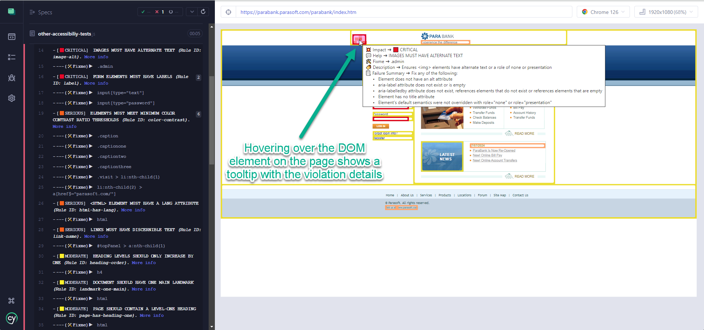
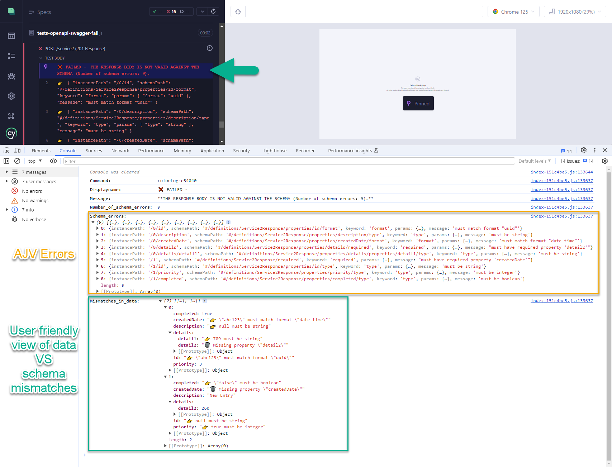

About
Passionate about quality products and maps.
- Test Automation
- QA Blogger
- Cypress Independent Contributor
- Cypress Plugin-ator 😎
- Accessibility
- Product Development
- GIS Devotee
Projects
https://github.com/sclavijosuero
https://www.npmjs.com/~sclavijosuero
'I believe I have worked in nearly every role within the world of software and product development:
analyst, developer, support, consultant, software engineer, tech lead, and product manager.
But one day, I had a realization... Sometimes, you need to reinvent yourself to rediscover your true self.
That's how I became a Software QA Engineer.'
― Myself
Plugins
- wick-a11y
Cypress plugin for performing configurable Accessibility tests using AXE. Flawless integration in Cypress with violations shown graphically on the web page and the Cypress log, and generating HTML document with violations details and screenshot.  - cypress-ajv-schema-validator
Lightweight JSON Schema validator for Cypress using AJV.  - how-to-create-a-cypress-plugin
Example of how to create a Cypress Plugin from scratch.